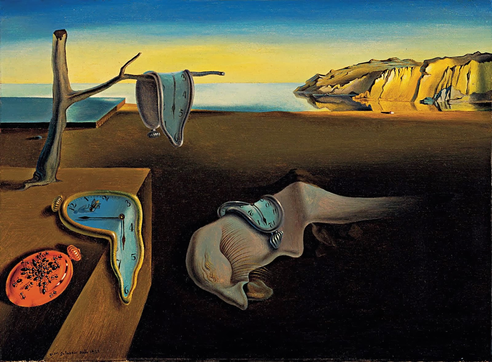

Salvador Dalí, A Persistência da Memória
The Cafe Terrace, 1888, Van Gogh
Sunflowers, 1887, Van Gogh
Starry Night, 1889, Van Gogh
Church at Auvers, 1890, Van Gogh
The Bedroom at Arles, 1887, Van Gogh